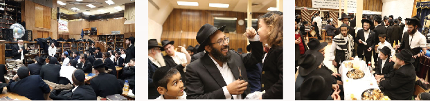

משולחנות הפארבריינגענ’ס מספר הרב שלום בער לויטין : בשנת תשכ”ח שהיתי כאן ב–770 בת
מספר הרב שלום בער לויטין: בשנת תשכ”ח שהיתי כאן ב–770 בתור בחור. כשהתקרב מועד י”ד כסלו יום הנישואין של הרבי, החלו הבחורים מחשבים בדעתם מה ניתן להביא בתור מתנה לקראת יום–הנישואין.
משולחנות הפארבריינגענ’ס
מספר הרב שלום בער לויטין: בשנת תשכ”ח שהיתי כאן ב–770 בתור בחור. כשהתקרב מועד י”ד כסלו יום הנישואין של הרבי, החלו הבחורים מחשבים בדעתם מה ניתן להביא בתור מתנה לקראת יום–הנישואין. אז, בתשכ”ח החלה שנת הארבעים לי”ד כסלו תרפ”ט, דבר שהוסיף כמובן לרצון לארגן מתנה חשובה לרבי. בין הבחורים שהיו אז נפלה החלטה להביא סכום כסף - ארבעת אלפים דולר, שהיו באותם ימים סכום גדול מאוד. היה בחור שהתנגד לרעיון ביותר. הוא טען: “מה? בחורים צריכים להביא לרבי בתור מתנה מאמרים ושיחות, דפי גמרא בעל–פה, לא כסף. כסף שייך לאברכים, לא לבחורים שעניינם לשבת וללמוד. ככל שהתקרב ובא התאריך נכנסו הבחורים ללחץ - עדיין לא השגנו את כל הסכום. כל אחד נתן מחסכנותיו (עד כמה שיש לכל בחור), והלך להשיג הלוואות, התרימו אנשים ברחוב. לבחור הנ”ל שהתנגד לרעיון, כנראה שהיה הרבה כסף ולפיכך החליטו כמה מהבחורים (נדמה לי שאחד מהם היה הת’ נתן וואלף [כיום מנהל מוסדות החינוך בנה”ח]), לשבת על אותו בחור ולהסביר לו את חשיבות העניין.
“תקשיב - אמרו לו - מאמרים ושיחות, הכל דברים טובים, אבל כשבנאדם מוציא מעצמו מכספו הפרטי בגשמיות, וכדברי חז”ל הידועים ש”אדם קרוב אצל ממונו”, ניכרת ההשקעה ושהעניין נוגע לו”. לאחר שדיברו איתו איזה זמן, קם אותו בחור והלך לחדרו וחזר משם עם סכום גדול - לערך אלף דולר בתוך מעטפה, והגישה לאחראי. כששאלו האחראי “מאי האי, רק לפני כמה דקות אתה טענת בלהט שאי”ז העניין, ומה קרה שהשתנית ועוד הבאת כזה סכום”? השיב אותו בחור: “אם נותנים לרבי משהו, נותנים את הכל, לעצמך לא משאירים שום דבר”. כשהכניסו זאת לרבי, קיבל זאת בנחת רוח גלויה. הנ”ל למד מכך שמגיע תאריך שכזה צריך לבעור אצל כל אחד התשוקה לתת מתנה. משהו שישמח את הרבי, ולכל הפחות בתור הכרת הטוב על החסד חינם שגמלנו.

שחרית במניין כ”ק אד”ש. את השיעור בדבר מלכות השבועי מוסר הת’ אלון משה סרוסי.
לאחר הסדרים מתקיימים ב–770 התוועדויות רבות. בבית רבינו מקפידים על הוראת כ”ק אד”ש להתוועד בכל יום מימי חודש הגאולה. על יד בימת ההתוועדויות מתוועד עם התמימים הרב ישראל הרשקוביץ שליח הרבי מה”מ ורב קהילת חב”ד בעיר אופקים, אה”ק. הרב הרשקוביץ מספר על מקרה מיוחד שהיה עד לו בשנת הקבוצה - תשמ”א. “באותן שנים היה נכנס הרבי לתפילת מנחה שהתקיימה בזאל הקטן. לאחר עניית אמן על ברכת “אתה קדוש” היה מתיישב הרבי תוך שמשעין את מצחו על ידו הק’. באחד הימים, שמנו לב שהרבי נמנע מלהשען על ידו הק’ ויהי לפלא. לאחר מכן התברר, שבאותה תפילה נוכח יהודי של”ע פניו היו מעוותות כל כך מאיזו תאונה שעבר עד שהיה קשה להסתכל עליו. כ”ק אד”ש ברגישותו המיוחדת כנראה חש שאותו יהודי יפרש את ההישענות האמורה כהימנעות להביט על פניו הנובעת מדחיה, ולכן נמנע מכך.
יום שני, ט’ כסלו
יום הולדתו של כ”ק אדמו”ר האמצעי. הרבה מהתמימים בסדר חסידות–בוקר לומדים את הדבר–מלכות של שבוע שעבר בו מגלה הרבי את מהותו של היום. כידוע שביום זה חל גם יום ההילולא שלו.
אווירת חג נרגשת בביתו של נשיא תורת החסידות בדורנו.
למנחה, מגיעים תינוקות של בית רבן עם מלמדיהם. עניית ה”אמן” הטהורה שלהם מורגשת בזאל, ומוסיף לתחושה המיוחדת את 770 ביום שכזה.
לאחר הסדרים מתקיימת התוועדות חסידים מרכזית באירגון הגבאים. ההתוועדות נערכת עד חצות הלילה.
לאחר מכן מתקיימת ההתוועדות הקבועה בפינה הצפונית מזרחית בה התוועדו התמימים עם הרב הרב יהודה פרידמן שליח כ”ק אד”ש במילי בייסין, ניו יורק.
יום שלישי, י’ כסלו
יום הבהיר חג הגאולה של אדמו”ר האמצעי. למרות ההתוועדויות הרבות שהתקיימו אתמול, מתייצבים הבחורים לסדר חסידות בוקר בזמן. רבים מהבחורים שוקעים בלימוד מאמר של בעל הגאולה.
היום בסדר נגלה, נמסר שיעור מאת ראש–הישיבה הרב לאבקובסקי על הסוגיא הנלמדת. בדבריו הוא מזכיר הלכה מעניינת (המובאת באדה”ז בהל’ קריאת שמע) שנשים חייבות באמירת “ויאמר ואמת ויציב”, אפי’ אם לא התפללו באותו יום. כיון שנתקנו לאומרן זכר ליציאת מצרים. ומצווה זו (לזכור את יציאת מצרים בכל יום) אינה מצווה שהזמ”ג.
בערב, מתקיים שיעור גאולה ומשיח בשפה האנגלית בפינה הצפונית מזרחית בבית חיינו, בהשתתפות קהל רב.
בלילה מתיישבים רבים מהתמימים להתוועד, ההתוועדויות נמשכות עד אור הבוקר ממש. באחת התוועדויות נסוב הדיבור על כך שמצד אחד נדרשת מבחור ומכל חסיד השקיעה בלימוד החסידות ועד כדי יכולת “לצטט”, ומאידך נדרשת גם ההבנה וההתחברות עם הדברים. אשר זהו חידושו של בעל הגאולה - לימוד חסידות מתוך הבנה והשגה, ולא רק שהדברים יישארו בשכל בלבד, אלא גם יבואו לידי פועל וביטוי בחיי היום–יום.
יום רביעי, י”א כסלו
לאחר תפילת שחרית מתקיימת אופשערניש לחייל בצ”ה שניאור זלמן מזרחי, בנו של השליח יעקב מזרחי, ונכדו של השליח הרב יואל ימיני בכפר–סבא, אה”ק. תמימים ואנ”ש ניגשים לאחל מזל טוב לשלוחים היקרים ולהשתתף בנטילת שערות מראשו של הילד ע”י מספריים. שעה קלה לאחמ”כ מתקיימת הנחת תפילין לחייל בצ”ה מנחם דובאוו בנו של הרה”ח ר’ ניסן דובאוו.
היום בערב לאחר סדר ליקוטי שיחות התקיים בזאל שיעורו המרתק של הגבאי ר’ יוסף יצחק לאש בהלכות קידוש החודש להרמב”ם. השיעור נמסר בקשר עם לימוד הלכות אלו במסלול ג’ פרקים. לאט לאט הציג הרב הנ”ל יסודות וכללים בהלכות אלו, דבר שעוזר רבות לכל החפץ ללמוד ולדעת הלכות אלו על בוריין.
בזאל הקטן מתקיימת התוועדות באנגלית עם השליח לסיאטל, וואשינגטון - הרב שלום דובער לויטין [ראה מסגרת].
יום חמישי, י”ב כסלו
השיעור השבועי בגאולה ומשיח לעיון, נמסר ע”י הת’ מנחם מענדל טל. נושא השיעור: מהותה של הלבנה כיום והנמשל לכך לבני ישראל. הנ”ל מציג ב’ התבטאויות של כ”ק אד”ש על הלבנה. כאשר מצד א’ אומר שכיום יש בה כמה עניינים כמו לעת”ל, ואילו מצד שני אומר, שכל העניינים שיהיו בה לעת”ל מעין זה נמצא בה כבר כיום. וכאן נשאלת השאלה מה יותר נעלה, האם ריבוי כמות (כל העניינים שיהיו בה) ללא איכות (כיום זה רק ‘מעין’) או מיעוט בכמות (כמה עניינים) אך בריבוי איכות (כיום עניינים אלו נמצאים בה בשלימות). הוא מבאר עניינים אלו בהרחבה ובהסברה טובה.
לאחר השיעור הנפלא, מזדרזים הבחורים להגיע אל חדר האוכל של הישיבה ב–1414, שם מתקיימת מסיבה לאחד מחברינו לספסל הלימודים, שאחיו התחתן היום באה”ק כאשר הוא בחר להישאר אצל כ”ק אד”ש לשנה תמימה, שנת הקבוצה.
התמימים מתיישבים על–יד שולחנות ערוכים המלאים בכל טוב ומאחלים מזל–טוב, חיש קל נפתחת לה התוועדות, כאשר בהמשך הערב מתקיימים ריקודים שנמשכים עד חצות הלילה. כיף לראות את התמימים במיטבם. מפעים לגלות ש”אלוקות” אינה איזושהי ‘בחינה עליונה’ בסולם הספירות המתגלה לתלמיד ב”סדנת קבלה” או משהו בסגנון. פשוט לחזות בעניים בשריות ב”ליובאוויטש” בתפארתה - אהבת ישראל אמיתית - לשמוח בשמחתו של השני משל היה זה אחיך שמתחתן.
היום בלילה, מתקיימת התוועדות עם הרב זלמן לנדא, השוהה בימים אלו בד’ אמותיו של מלך, כ”ק אד”ש.
כולם מזכירים את בואה של השבת הקרבה ובאה - יום הבהיר ושנת התשעים לנישואי כ”ק אד”ש עם הרבנית.
יום שישי, י”ג כסלו
“יכירו וידעו כל יושבי תבל”. היום בתשמ”ו פסק השופט הגוי במשפט מחפיר שהתנהל מול כ”ק אד”ש, שאינו צריך לבוא ולהעיד (רח”ל), וליהודים הייתה אורה ושמחה.
כמובן, ש”הימים האלו נזכרים ונעשים”, והתמימים יוצאים למבצעים להפיץ את בשורת הגאולה במטרופולין הגדול, להסביר לעם הנמצאים בשדות את עניינו של הגואל שזכו לגור בקרבתו.
שלפחות ידעו שזכו - למה שרבים וטובים לא זכו. להיות קרובים מרחק נסיעה ברכבת מד’ אמותיו של המלך! לו חכמו והבינו. אז היו מניחים כל עסקיהם ובאים להסתופף בביתו, לחסות בצילו. אשרינו שזכינו.
בקבלת שבת הגיע קהל גדול לכבוד יום הבהיר “י”ד כסלו” - שנת התשעים לנישואי כ”ק אדמו”ר שליט”א עם להבחל”ח הרבנית הצדקנית נ”ע זי”ע. תאריך מיוחד זה מוצא גם ביטוי בחוברות החדשות המפוזרות על השולחנות, כדוגמת קובץ הערות חדש שיצא לרגל היום מאת תלמידי הישיבה לרגל היום המיוחד, ועוד.
“לכה דודי” ניגנו במנגינת “מהרה ישמע”, כשב”לא תבושי” עובר הקהל למנגינת “חיילי אדוננו”. אלו הרגעים המרוממים של השבוע. שירת ה”יחי” המתפרצת לנוכח מקומו הק’ של כ”ק אדמו”ר שליט”א. השירה הולכת וגוברת והקהל ממחיאות כף עובר ומתעלה, ממש רוקד על מקומו. הן לב מי לא יגיל בעת שכזו. השירה שנמשכת דקות ארוכות, מבטאת רחשי הלב של הקהל. כולם מרוכזים בדבר אחד: ההתגלות המלאה והמושלמת. שנת התשעים ל”יום שקישר אותי עמכם ואתכם עימי”. תחושת ה”מזל טוב” העוטפת ומכה בכל הלבבות אינה מרפה גם לאחר הפסקת השירה.
לאחר התפילה מתיישבים עשרות בעלי–בתים להתוועד. חיש קל מובאים חלות ויין ומיני תרגימה מה”לשכה”, מפות נפרשות, ובזאל נפתחות כמה התוועדויות. קריאות ה”מזל טוב” הנשמעים מכל עבר גורמים להרבה לעצור ולעכל את משמעות היום המיוחד אליו נכנסנו במחיצת כ”ק אד”ש.
ת ש ע י ם ש נ ה ! מ ז ל ט ו ב . “אריכות ימים ושנים טובות מתוך נחת אמיתי מכלל החסידים ותיכף ומיד נזכה כולנו להתגלותך המושלמת” - זוהי נקודת האיחול הלובש צורות שונות בפיותיהם של החסידים המתוועדים.
חזקה על התמימים פקודת כ”ק אד”ש, וחרף ההתוועדויות הרבות, מתיישבים הם ללמוד בסדר חסידות שמתקיים כעת מטעם הנהלת הישיבה. לאחר סיום הסדר בשעה שמונה, רצים רבים מהתמימים לאכול בחטף בחדר–האוכל וחוזרים ל–770, שם כבר נפתחה התוועדות עם המד”א חבר הבד”צ הגה”ח רב יוסף ישעיה ברוין. הרב ברוין מתוועד על מהותו של יום והחידוש המיוחד - הרבי מתקשר עם כל חסיד במעמדו מוצבו, ללא תנאים, דבר זה מעורר אצלנו את האהבה כמים הפנים לפנים, ללא חשבונות וגבולות בהתמסרות מוחלטת לרצונו הק’. הוא מיטיב לתאר את הימים בהם עמדו הם בתור בחורים על יד חדרו הק’ של כ”ק אד”ש בתשנ”ג, “היו זמנים ששמענו את כ”ק אד”ש צועק מרוב יסורים רח”ל. ובשביל מי נכנס אד”ש בזה? בשביל החסידים. המלך משליך חייו מנגד” (מחמת קוצר היריעה לא הובאו כל דבריו בשלימות ועם הקוראים הסליחה).
בהמשך הלילה מגיעים עוד אנ”ש להתוועד, וההתוועדויות נמשכות עד השעות הקטנות של הלילה.
יום שבת קודש.
יום הבהיר - י”ד כסלו
שנת התשעים לנישואי כ”ק אד”ש עם - להבחל”ח - הרבנית הצדקנית נ”ע זי”ע
ב”קל–אדון” ניגנו במנגינת “מהרה ישמע”. לאחר התפילה החלו לארגן את הזאל להתוועדות. רבים מהתמימים הזדרזו לתפוס את מקומם. מחכים לכניסת כ”ק אד”ש להתוועדות בהתגלותו המושלמת לעין כל.
השעה אחת עשרים וחמש. והקהל החל לנגן בעוז “יחי אדוננו” במנגינת “מהרה ישמע”. לבינתיים מגיע ר’ מנחם גערליצקי ומוזג את היין לגביעו הק’ של כ”ק אד”ש. השירה גברה והלכה לנוכח כניסתו הצפויה של כ”ק אד”ש.
אחת ושלושים. השירה נפסקת ואת מקומה תופס השקט. מייחלים לשמוע מכ”ק אד”ש “תורה חדשה” בביאור מעלת היום. גם כשחולפות הדקות ואת אד”ש עדיין לא רואים אי”ז מחליש את האמונה. אנו בטוחים שהנה. זה קורה. יש מהקהל שנפנה ללמוד את ה”הנחה” מההתוועדות של ש”פ וישלח תשנ”ב, רבים מהתמימים נשארים לעמוד דרוכים ומוכנים להתגלות.
בשעה שלוש וחצי יוצאים להקהלת קהילות אל עבר השכונות הסמוכות - בורו פארק, פלטבוש, ויש קבוצה שיצאה מוקדם יותר אל שכונת “קווינס” המרוחקת, על מנת לחזור נקודה מהדבר מלכות השבועי בבתי הכנסיות.
בזמן זה ישנם כבר קבוצות רבות של התוועדויות. בשולחן המרכזי מתקיימת חגיגת בר–מצווה לת’ שלום וילשאנסקי בנו של הרה”ח ר’ מאיר וילשאנסקי מצפת, בחגיגה זו מתוועד ר’ נחום מרקוביץ עם אביו של החתן. ר’ נחום סיפר סיפור מעניין: באחת השנים הראשונות לנשיאות הגיע אורח מארץ ישראל ומסר לכ”ק אד”ש בהתוועדות בשבת יין מארץ הקודש. אחד האנשים שנכחו בהתוועדות אמר לכ”ק אד”ש ש”יש בזה שאלה על הכשרות של היין”. ר’ יוחנן גורדון שהיה אז הגבאי ב–770 ניגש אל אותו אחד ואמר לו “השתגעת? מה אתה אומר לרבי דעות? רוץ לרבי ותגיד לו שאתה לא יודע מה אתה אומר!” אותו אחד התבייש בכך ושלח בחור במקומו.
הבחור ניגש לרבי ואמר לו: “שאותו אחד שאמר שיש בעיה, ביקש למסור שהוא לא ידע מה הוא אמר”. כששמע זאת הרבי הגיב ואמר: “ומזה שהוא חזר בו הוא כן יודע?”… ר’ נחום הוציא מזה שאנחנו אומרים ‘יחי’ ומברכים את הרבי בכזו שבת, האם אנחנו מודעים למה שאנחנו אומרים או שאומרים כי ההוא שלח אותנו להגיד וכו’? הוא הוסיף ואמר “אנחנו לא מבינים ברבי.” ובהמשך לזה שאל: “האם תופסים אנו שיש לנו הזכות להיות קשורים ברבי?” בקשר לזה סיפר משל: היו ב’ נשמות שנפגשו בין שמים לארץ. אחת מהן כשהיא בדרכה לרדת לעוה”ז, והשניה שעולה מעוה”ז בדרכה לבין–דין של מעלה. שואלת הראשונה את השניה, “איך ניתן לקיים מצות בעוה”ז?” משיבה לה חברתה “יש שטרות ירוקים שאיתם ניתן לקיים מצוות, אך בכדי להשיגם צריך לעבוד קשה”. נענית הראשונה ואמרת: “אז אעבוד קשה”. מחזירה השניה: “הבעיה היא שעד שמשיגים זאת - מגיע הזמן לחזור למעלה”…
“אותו דבר - אמר ר’ נחום - זה שמשה אמת ותורתו אמת, זה דבר וודאי. הבעיה שעד שמעכלים זאת כבר מזדקנים. אתם, הצעירים, אתם חוד החנית. תכירו באמת, ואל תגידו שלא אמרו לכם זאת - משה אמת ותורתו אמת, העולם מחכה לשמוע מכם מה יש לליובאוויטש ולנשיאה להציע”…
לאחר מעריב ניגש הרה”ח שמואל סמואלס לברך את כ”ק אדמו”ר שליט”א לרגל שנת התשעים.
לאחר הוידאו, מתקיימים ריקודי שמחה ב–770. הכל משתתפים מתוך רגש הודאה וביחד עם הביטחון שאט אט מגיע כ”ק אד”ש וגואלנו גאולת עולמים.
בהמשך הערב נפתחות ב–770 התוועדויות רבות עד אור הבוקר.
* * *
אבא, זהו סיכומו של שבוע ב–770. שנת התשעים. אשרינו שזכינו. אלע דיינקען דא דעם אויבערשטער, שזיכנו להיות קשורים ודבוקים וסמוכים בדל”ת אמותיו של הנשיא, ובטוחים אנו שהנה זה כ”ק אדמו”ר מלך המשיח שליט”א בא וגואלנו - לשון רבים - כולנו יחד, ומביאנו אל בית המקדש השלישי ושם גופא לקודש הקדשים, אז יכירו וידעו כל יושבי תבל כי הנה אלוקנו זה אשר קיווינו לו הושיענו, ונכריז לפניו:
יחי אדוננו מורנו ורבינו מלך המשיח לעולם ועד!
דוידי
ארצות החיים - 770 - בית משיח.